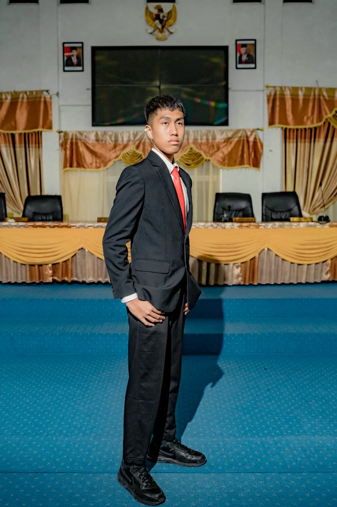

MAHASISWA tEKNOLOGI INFORMASI
Mahasiswa Teknologi Informasi USU yang passionate di bidang web development dan UI/UX design. Berorientasi pada solusi digital yang fungsional, estetis, dan berdampak nyata. Siap berkontribusi secara profesional.
// PURPOSE
Menjadi pengembang perangkat lunak yang menguasai keamanan siber dan sistem informasi, guna menciptakan solusi digital yang fungsional, aman, dan memberikan dampak nyata di dunia nyata.
S1 - Teknologi Informasi · IPK: [3.63/ 4.00]
IPA
Web Developer
Membuat Website Management Karyawan dan Absensi Pada PT
Dr. Pauzi Ibrahim Nainggolan, S.Komp., M.Sc.
// PROJECT PORTOFOLIO
proyek nyata, studi kasus teknis, dan pengembangan sistem berbasis Laravel & AI.
Sistem manajemen karyawan terintegrasi untuk 150+ pegawai PT Sipirok Indah, dibangun di atas Laravel 12 dengan arsitektur multi-role authentication mencakup enam level akses pengguna. Fitur utama meliputi sistem absensi real-time dengan logika keterlambatan berbasis shift, rekap kehadiran otomatis, manajemen izin & sakit, multi-photo upload untuk laporan patroli keamanan, serta modul pelaporan eksekutif. Database dirancang dengan ERD terstruktur menggunakan MySQL, seluruh file storage dikelola via Laravel Filesystem dengan path management yang konsisten antar environment.
* Source code tersedia untuk ditunjukkan saat interview
Platform intelijen analitik berbasis Laravel 13 yang dirancang untuk mendukung pengambilan keputusan strategis Kota Medan. Mengintegrasikan AI pipeline via n8n Cloud dengan model GPT-4o-mini dan Groq API untuk menghasilkan analisis PESTLE, SWOT, pemetaan aktor, dan risk scoring secara otomatis. Arsitektur backend dibangun dengan standalone Blade system, tujuh tabel analitik terstruktur di MySQL, serta modul distribusi laporan otomatis per instansi. Seluruh alur kerja AI diorkestrasikan melalui webhook n8n dengan normalisasi JSON response langsung di layer controller Laravel.
* Source code tersedia untuk ditunjukkan saat interview